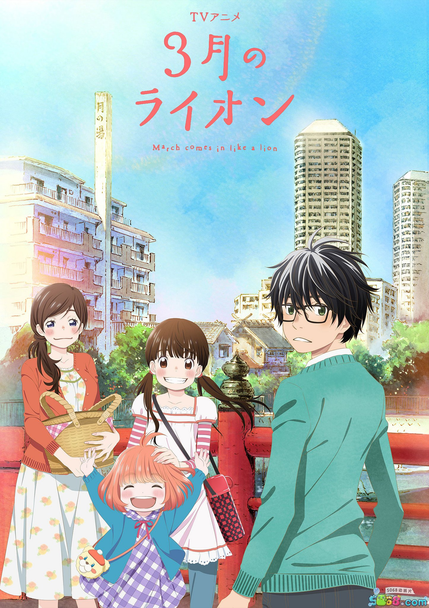

故事，从这里开始
职业将棋棋士桐山零独自生活，也承受着比赛与成长带来的压力。与川本家相识后，他的日常开始有了新的温度。
为什么推荐
将棋只是故事的一部分，更重要的是角色怎样面对孤独、家庭和自我价值。适合愿意跟随情绪慢慢推进的观众。
适合怎样的你
喜欢成长故事、温柔日常和人物内心描写的观众。
观看前，知道这些
涉及孤独、家庭关系和校园伤害等沉重话题。
STORY 10 / 青春成长
3月のライオン
一个少年棋手，在人与人的日常里找到可以停留的地方。
想慢慢品味
A STORY FOR TONIGHT职业将棋棋士桐山零独自生活，也承受着比赛与成长带来的压力。与川本家相识后，他的日常开始有了新的温度。
将棋只是故事的一部分，更重要的是角色怎样面对孤独、家庭和自我价值。适合愿意跟随情绪慢慢推进的观众。
喜欢成长故事、温柔日常和人物内心描写的观众。
涉及孤独、家庭关系和校园伤害等沉重话题。